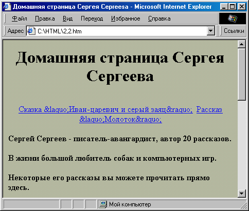
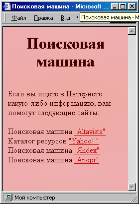

|
|
|
|
2.2. Самое главное на любой веб-странице —гиперссылки
В предыдущем разделе мы рассмотрели различные способы форматирования текста веб-страницы. Однако созданная нами в качестве примера “Домашняя страница Сергея Сергеева” имеет существенный недостаток: она представляет собой голый текст. И дело тут вовсе не в отсутствии графики или звуковых фрагментов (графика и звук, конечно, украшают страничку, но в данном случае не это главное). Дело в отсутствии гиперссылок. Гилерссылки — контекстные связи между расположенными в Интернете материалами. Они являются основой построения World Wide Web. Обычно пользователи любят страницы, насыщенные гиперссылками, и это естественно: приятно, когда есть возможность легко получить более подробную информацию по каждой представленной теме.
В принципе, любое слово, встречающееся на веб-странице, можно превратить в гиперссылку, если известны какие-либо другие страницы, описывающие этот предмет более подробно. Так, например, на странице, посвященной описанию жизни в блокадном Ленинграде, в том месте, где речь идет об исполнении седьмой симфонии Шостаковича, помещена гиперссылка на страницу с биографией этого композитора. А на странице, посвященной компьютерной игре Quake, в углу указано, что теперь в нее можно играть и на компьютерах с операционной системой Linux — и в этом месте есть гиперссылка на страницу, с которой можно загрузить дистрибутив этой операционной системы. Щелкая кнопкой мыши по гиперссылкам, можно в принципе обойти хоть весь Интернет (точнее, его службу WWW).
Давайте рассмотрим, каким образом можно вставлять гиперссылки в тексты веб-страниц. Для этого еще немного потерзаем пример из предыдущего раздела (надеюсь, что этот Сергей Сергеев еще не надоел вам, а если уже надоел, то потерпите еще немного — скоро начнутся другие примеры). Вообще говоря, в текст веб-страницы можно вставлять гиперссылки трех типов:
• ссылки в другие места той же страницы; • ссылки на другие страницы этого же сайта или сервера;
• ссылки на страницы, расположенные на любом другом сервере в Интернете.
Локальные гиперссылки
Итак, начнем. На нашей страничке, представленной выше, есть три раздела: вступительный текст, сказка и рассказ. Конечно, поскольку это только пример, то все тексты небольшие (сочинять полностью сказки за Сергея Сергеева автору было недосуг) и, скорее всего, на экране эта страничка видна почти целиком. Однако представьте себе, что и вступительный текст, и рассказы занимают довольно большой объем (например, два экрана). В этом случае некорректно вынуждать пользователя перемещаться по странице только с помощью полос прокрутки. Кроме того, он может и не заметить, что помимо вступительного текста, на страничке есть еще что-то, если не дочитает текст до конца. В этом случае хорошим тоном будет прямо наверху странички поставить гиперссылки на оба рассказа.
Чтобы это сделать, надо сначала определить места, где эти рассказы начинаются, как “якоря” (места, к которым можно будет быстро переместиться). Для этого используют тег <А> . Это можно сделать, например, так:
<A NAME="skazka">ИВАН- ЦАРЕВИЧ И СЕРЫЙ ЗАЯЦ</А>
В данном случае мы определяем атрибут NAME= — имя якоря. По этому имени мы и будем на него ссылаться.
Для установки гиперссылки также используется тег <А> , но с установленным атрибутом HREF=. Значение этого атрибута определяет, что отобразится на экране, если пользователь щелкнет кнопкой мыши на гиперссылке. Чтобы сослаться на якорь, нужно просто указать в качестве значения HREF= имя этого якоря, перед которым расположен знак #:
<A HREF="#skazka">Сказка «Иван-царевич и серый заяц&raquо;</А>
Вce, что находится внутри тега гиперссылки, отображается в броузере подчеркнутом виде и другим цветом, а указатель мыши при наведении на
гиперссылку принимает вид руки с вытянутым указательным пальцем. По этим признакам читатель понимает, что перед ним гиперссылка.
Точно таким же образом можно поставить гиперссылку на второй рассказ. По умолчанию в большинстве броузеров гиперссылки отображаются синим цветом, что совершенно не гармонирует с цветовой гаммой нашей странички. К счастью, мы можем сами задать нужный цвет отображения гиперссылок. Для этого нужно в теге <BODY> установить значение атрибута LINK=. Цвет можно выбрать по своему усмотрению, можно даже сделать гиперссылки тем же цветом, что и основной текст. Но вот этого как раз делать не рекомендуется, поскольку читатель не сможет быстро понять, где гиперссылка, а где нет. Обычно лучше всего подобрать цвет, близкий по оттенку к основному, однако отличающийся от него, например, по яркости. В нашем случае можно написать так:
<BODY BGCOLOR="#BABAAO" TEXT="#1D1D18" LINK="#634438">
Однако этого недостаточно. Дело в том, что броузер обычно отображает гиперссылки, которыми читатель еще не пользовался, одним цветом, а “посещенные” — другим. Этот цвет выбирается с помощью атрибута VLINK= тега <BODY> . Кроме того, есть еще атрибут ALINK=, который определяет цвет так называемой активной ссылки, то есть той, на которой в данный момент происходит щелчок кнопкой мыши. В большинстве случаев он почти не заметен (ведь появляется он только на долю секунды, если только у читателя нет привычки нажать кнопку мыши и долго ее не отпускать). Полное определение цветовой схемы страницы в теге <BODY> может выглядеть так:
<HTML>
<HEAD>
<META HTTP-EQUIV="Content-Type" CONTENT="text/html; charset=windows-1251">
<META NAME="Generator" CONTENT="Microsoft Word 97">
<TITLE>Домашняя страница Сергея Cepreesa</TITLE>
<META NAME="Template" CONTENT="C:\PROGRAM FILES\MICROSOFT OFFICE\OFFICE\html.dot">
</HEAD>
<BODY TEXT="#000000" BGCOLOR="#babaa0">
<DIV aling="center"><h1>Домашняя страница Сергея Сергеева</h1> </div>
</FONT><FONT SIZE=1><P><BR>
<div align="center"><a href="#skazka">Сказка «Иван-царевич и серый заяц»</A>
<A HREF="#rasskaz">Рассказ «Молоток»</a></div>
</FONT><B><FONT FACE="Times New Roman">Сергей Сергеев - писатель-авангардист, автор 20 рассказов. <BR>
В жизни большой любитель собак и компьютерных игр. <BR>
<BR>
Некоторые его рассказы вы можете прочитать прямо здесь. </P>
</FONT><P><HR WIDTH="75%"></P>
</B><FONT FACE="Times New Roman"><H2 ALIGN="CENTER">ИBAH-ЦАРЕВИЧ И СЕРЫЙ ЗАЯЦ <BR>
сказка</H2>
<P ALIGN="RIGHT">Hy, погоди!.. <BR>
(Из мультфильма)</Р></FONT> </P>
<FONT FACE="Times New Roman"><P ALIGN="JUSTIFY"> Жил да был Иван-Царевич, и все у него было: и злато-серебро, и невест полный дворец, и книжек много умных, и тренажерный зал огромный... <BR>
Долго ли, коротко ли ... <BR>
И они жили долго и счастливо и умерли в один день.</Р></FONT> </P>
<P><HR WIDTH="75%"></P>
<FONT FACE="Times New Roman"><H2 ALIGN="CENTER">MOЛOTOK <BR>
рассказ</H2>
<P ALIGN="RIGHT">Mы кузнецы, и дух наш молод. <BR>
(Из песни)</P>
<P> Это случилось очень давно, уж и не помню в каком году, в каком веке и в каком тысячелетии... (Здесь располагается текст рассказа) </P></FONT>
</BODY>
</HTML>
Результат показан на рис. 2.7. Если мы теперь щелкнем на какой-либо из гиперссылок, то страница “скакнет” вниз, так, чтобы текст нашего якоря отображался вверху экрана. (Однако, если при этом для заполнения экране не будет хватать текста, то текст якоря может оказаться не на самом верх страницы, а несколько ниже.)

Рис. 2.7. Применение внутренних гиперссылок
Гиперссылки в пределах сайта
Теперь рассмотрим другой случай. Обычно бывает целесообразно разместить разные логические фрагменты текста в разных файлах (особенно если они большие). Тогда время загрузки каждого из них намного уменьшится, и если пользователю необходимо прочитать какой-нибудь один фрагмент (например рассказ “ Молоток ”), то ему не надо будет для этого дожидаться загрузки всего текста, расположенного выше.
В нашем примере давайте выделим в отдельные файлы вступительный текст и каждый из рассказов. Основной файл назовем sergeev.html:
<!DOCTYPE HTML PUBLIC "-//W3C//DTD HTML 4.0 Transitional//EN">
<HTML>
<HEAD>
<TITLE>Домашняя страница Сергея Cepreeвa</TITLE>
</HEAD>
<BODY BGCOLOR="#BABAAO" TEXT="#1D1D18" LINK="#634438" VLINK="#634438" ALINK="Black'">
<H1><DIV ALIGN="center">Дoмaшняя страница Сергея Cepreeaa</DIV> </H1>
<DIV ALIGN="center"><A HREF="skazka.html">CKА3KА «ИBАH- царевич и серый зaяц»</A>
<A HREF="rasskaz.html">Paccкaз «Moлоток »</A></DIV> <BR>
<FONT SIZE="+l"><B>Cepгeй Сергеев</В> - писатель-авангардист, автор 20 рассказов.<BR>
В жизни большой любитель собак и компьютерных игр.<ВR><ВR>
Некоторые его рассказы вы можете прочитать прямо здесь.<BR> </FONT>
<HR WIDTH="75%"> </BODY> </HTML>
Затем создадим файл первого рассказа. Назовем его skazka.html:
<!DOCTYPE HTML PUBLIC "-//W3C//DTD HTML 4.0 Transitional//EN"> <HTML> <HEAD>
<TITLE>ИBAH-ЦAPEBИЧ И СЕРЫЙ 3AЯЦ,</TITLE>
</HEAD>
<BODY BGCOLOR="#BABAAO" TEXT="#1D1D18" LINK="#634438" VLINK="#634438" ALINK="Black">
<H2XP ALIGN="center">ИBAH-ЦAPEBИЧ И СЕРЫЙ ЗАЯЦ<ВR> <I>сказка</I></Р></Н2>
<Р ALIGN="right"XFONT SIZE="-l">Hy, погоди!.. <BR> <I> (Из мультфильма) </I></FONT></P>
<Р ALIGN="justify"> Жил да был Иван-Царевич, и все у него было: и злато-серебро, и невест полный дворец...<BR>
Долго ли, коротко ли ... <BR>
И они жили долго и счастливо и умерли в один день. </Р>
<HR WIDTH="75%"> <А НRЕF="sergeev.html">Вернуться на главную страницу</А>
</BODY>
</HTML>
И, наконец, создадим файл второго рассказа, rasskaz.html.
<!DOCTYPE HTML PUBLIC "-//W3C//DTD HTML 4.0 Transitional//EN"> <HTML> <HEAD> <TITLE>MOЛOTOK</TITLE>
</HEAD>
<BODY BGCOLOR="#BABAAO" TEXT="#1D1D18" LINK="#634438 " VLINK="#634438" ALINK="Black">
<H2XP ALIGN="center">MOЛOTOK<BR> <i>рассказ</i></Р></Н2>
<P ALIGN="right"><FONT SIZE="-l">Mы кузнецы, и дух наш молод. <BR><I> (Из песни) </I></FONT></P>
<Р ALIGN="justify"> Это случилось очень давно, уж и не помню в каком году, в каком веке и в каком тысячелетии... (Здесь располагается текст рассказа) </Р>
<HR WIDTH="75%"> <А НREF="sergeev.htm1">Вернуться на главную страницу</А>
</BODY>
</HTML>
Как видите, чтобы установить гиперссылку на другой файл, необходимо в качестве значения атрибута HREF= указать имя этого файла:
<A HREF="skazka.html">Cкaзкa «Иван-царевич и серый зaяц»</A>
В этом случае при щелчке мыши на гиперссылке в окно броузера загрузится соответствующий файл. Этот файл должен быть расположен в той же папке, что и исходный. Поскольку после щелчка на гиперссылке и загрузки файла с рассказом пользователь уходит с основной страницы, хорошим тоном будет дать ему возможность вернуться обратно. Для этого
в нашем примере в конце каждого файла с рассказом мы поместили гиперссылку
<А НRЕF="sergeev.html">Вернуться на главную страницу</А>
Она ведет обратно на главную страницу. Конечно, если этого не сделать, пользователь, скорее всего, сможет вернуться обратно, нажав в броузере кнопку Back (Назад). Однако в этом случае большинство читателей все равно обратят внимание на отсутствие обратной гиперссылки, и от этого у них останется не самое приятное впечатление.
Внешние гиперссылки
Однако гиперссылки можно устанавливать не только на файлы, содержа-щиеся в своем каталоге на сервере, но и на любые другие Интернет-ресурсы. В этом случае в качестве значения атрибута HREF= необходимо указать полный URL-appec ресурса, как показано ниже. Рассмотрим такой пример. Допустим, мы хотим сделать страничку, с которой можно легко попадать на излюбленные поисковые системы 1 . Естественно, для этого необходимо указывать полные URL-адреса этих сайтов, например, вот так:
Поисковая машина <А HREF="http://www.altavista.com">"Altavista" </А>
Теперь предположим, что мы хотим оставить пользователю возможность велнуться после посещения поисковой машины на нашу страничку. Но как это сделать? Ведь на поисковых машинах, скорее всего, гиперссылок на нее нет.
Один из выходов состоит в том, чтобы не загружать сайт поисковой машины в том же окне броузера, в которое была загружена наша веб-страница, а открыть ее в новом окне. Для этого нужно в теге <А> установить атрибут TARGET= со значением "_blank", следующим образом:
Поисковая машина <А HREF="http://www.altavista.corn" TARGET="_blank">"Altavista"</A><BR>
Давайте теперь вспомним, как задавать на страничке цвета и элементы форматирования текста, и посмотрим, что может получиться в целом.
<html>
<head>
<title>Поисковая машина</title>
</head>
<body BGCOLOR="#FPAEAE" TEXT="#480000" LINK="#C10000"
VLINK="#C10000" ALINK="#C10000">
<H1><DIV ALIGN="center">Поисковая машина</DIV></H1>
<br>
Если вы ищете в Интернете какую-либо информацию, вам помогут
следующие сайты:
<br><br>
Поисковая машина <A HREF="http://www.altavista.corn"
TARGET="_blank">"Altavista"</A><br>
Каталог ресурсов <A HREF="http://www.yahoo.corn"
TARGET="_blank">"Yahoo! "</A><br>
Поисковая машина <A HREF="http://www.yandex.ru"
TARGET="_blank">"Яndex"</A><br>
Поисковая машина <A HREF="http://www.aport.ru"
TARGET="_blank">"Anopт"</a>
</BODY>
</HTML>
Результат показан на рис. 2.8. Как видите, ничто не указывает на тот факт, что сайты поисковых систем будут загружаться в новое окно; пользователь увидит это только после щечка на гиперссылке.

Рис. 2.8. Применение гиперссылок для связей с удаленными серверами
Помимо значения "_blank", атрибут TARGET= может принимать еще значения "_self", "_top" и "_parent"; его значением может также быть имя любого окна. Однако все это мы рассмотрим позднее, Пока же запомните только, что значение "_blank" вызывает загрузку странички в новое окно броузера, а значение "_self" — в то же окно, в котором был сделан щелчок на гиперссылке. Собственно говоря, значение "_self определено по умолчанию.
И еще одно: не следует слишком злоупотреблять значением TARGET="_blank", поскольку при множестве открытых окон броузера читатель в них может легко запутаться и у него останется негативное ощущение. А вообще, гиперссылки всегда очень помогают в навигации в Интернете. Их никогда не бывает слишком много.
|
|
|
|